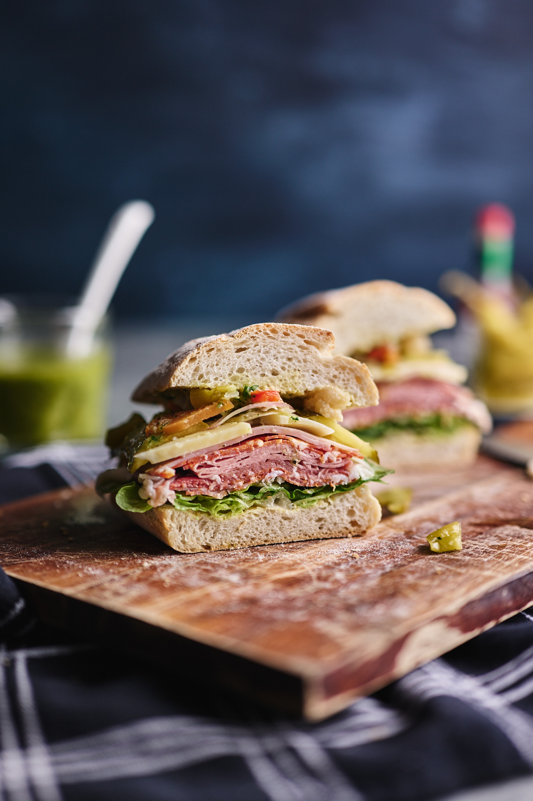

Deli Sandwich Recipe
Home

Ingredients
- 4 ciabatta rolls
- Butter, to your liking
- 2 tbsp American mustard
- 8 baby gem lettuce leaves, washed and dried
- 16 thin slices of hot sopressa
- 12 slices of prosciutto
- 8 slices of mortadella
- 16 slices of capocollo
- 8 slices of smoked ham
- 8 slices of provolone dolce cheese
- ½ red onion, thinly sliced
- 2 dill pickles, cut into slices about 3mm thick
- 150g mixed Italian pickled vegetables (giardiniera)
- 8 guindilla peppers, chopped
- 3 tbsp Italian dressing (see below)
- Hot sauce, to taste
For the Italian dressing
- 1 tbsp flat-leaf parsley leaves
- 1 tbsp basil leaves
- 1 tsp oregano leaves
- 1 sprig of thyme, leaves picked
- 2 tbsp white onion, roughly chopped
- 1 garlic clove, roughly chopped
- 1 tsp sugar
Steps
- For the Italian dressing, put all the ingredients into a blender or
food processor and blend until smooth, then taste for
balance and adjust as required.
- Cut the bread rolls in half, then spread the cut sides evenly with butter and mustard.
Layer all the ingredients inside the rolls in the order they're listed, finishing with
some Italian dressing and a little hot sauce, then press together to enclose the filling. Carefully cut
the sandwiches in half and serve.